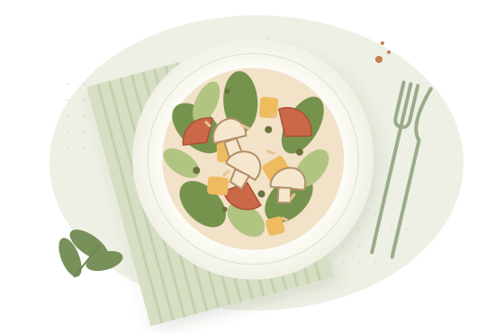

KEVESEBB PAZARLÁS, TÖBB JÓ FALATNézz a hűtőbe.
Nézz a hűtőbe.
Mi adunk egy ötletet.
Jelöld be, mi van otthon, és találd meg a következő kedvenc fogásodat. Egy finom vacsora közelebb van, mint gondolnád.
Nézzük, mi van a konyhában
Jó étel. Abból, ami van.egy csipet kreativitás ✧02 / EBBŐL FŐZHETSZ
Egy kis inspiráció
Most nincs ilyen találat.
Próbálj más szűrőket vagy adj hozzá alapanyagokat.
Kis gyűjtemény, valódi források. Az első kiadás 8 magyar recepttel indul. Minden receptnél megtalálod az eredetit, és közvetlenül betöltheted az aktuális online leírást.
01
Nézz körül otthon
Egy hagyma, pár tojás? Jó kezdet.
02
Találj egy jó ötletet
Látod, mi van meg és mi hiányzik.
03
Főzz valami finomat
A recept végigvezet a lépéseken.